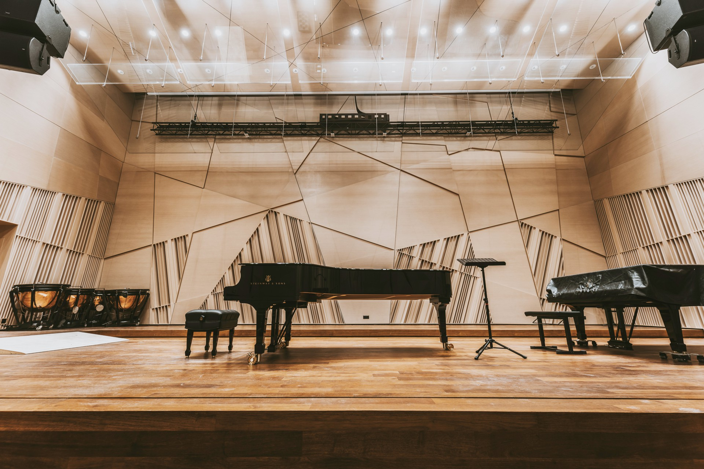
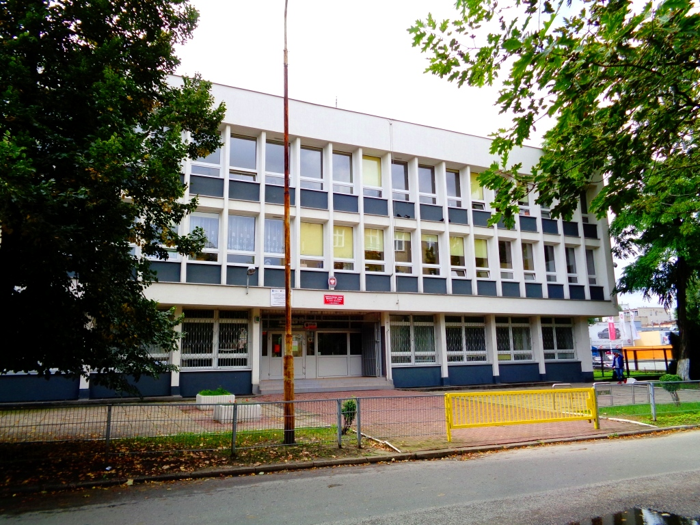

Galeria




Łódź, ul. Sosnowa 9
Ogólnokształcąca Szkoła Muzyczna I i II stopnia im. Henryka Wieniawskiego w Łodzi to wyjątkowa placówka edukacyjna, która łączy naukę ogólną z profesjonalnym kształceniem muzycznym. Uczniowie mają możliwość rozwijania swoich talentów artystycznych od najmłodszych lat aż do poziomu zaawansowanego.
Szkoła posiada wieloletnią tradycję i cieszy się uznaniem w środowisku muzycznym. W jej murach kształciło się wielu utalentowanych muzyków, którzy kontynuują karierę na scenach w Polsce i za granicą.
| Dzień | Zajęcia |
|---|---|
| Poniedziałek | Fortepian, teoria muzyki |
| Wtorek | Skrzypce, orkiestra |
| Środa | Chór, kształcenie słuchu |
| Czwartek | Gitara, historia muzyki |
| Piątek | Koncerty i próby |

